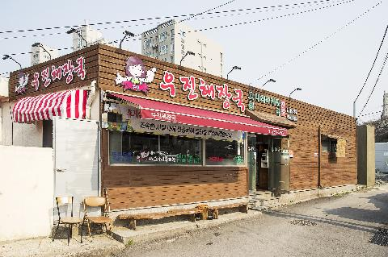
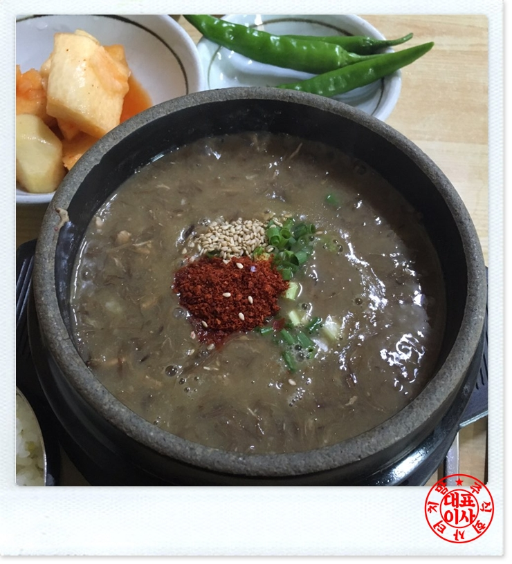

우진해장국
#제주도 #우진해장국 #애월
insta
map
매일 06:00 - 22:00 | 명절 휴무
064-757-3393
제주산 고사리를 갈아 넣고 푹 끓여 갈색 빛깔이 나는 제주식 해장국을 만날 수 있는 한식당입니다.
제주 육개장을 주문하면 뚝배기에 해장국을 담고 파와 고춧가루를 얹어 내는데요, 찬으로는 오징어젓갈과 부추무침, 깍두기 등의 밑반찬이 곁들여집니다.
제주 육개장을 주문하면 뚝배기에 해장국을 담고 파와 고춧가루를 얹어 내는데요, 찬으로는 오징어젓갈과 부추무침, 깍두기 등의 밑반찬이 곁들여집니다.
| 고사리육개장 | 9000원 | |
| 사골해장국 | 9000원 | |
| 몸국 | 9000원 | |
| 녹두빈대떡 | 15000원 |
제주 제주시 애월읍 애월해안로 272 [지번]고내리 474-1